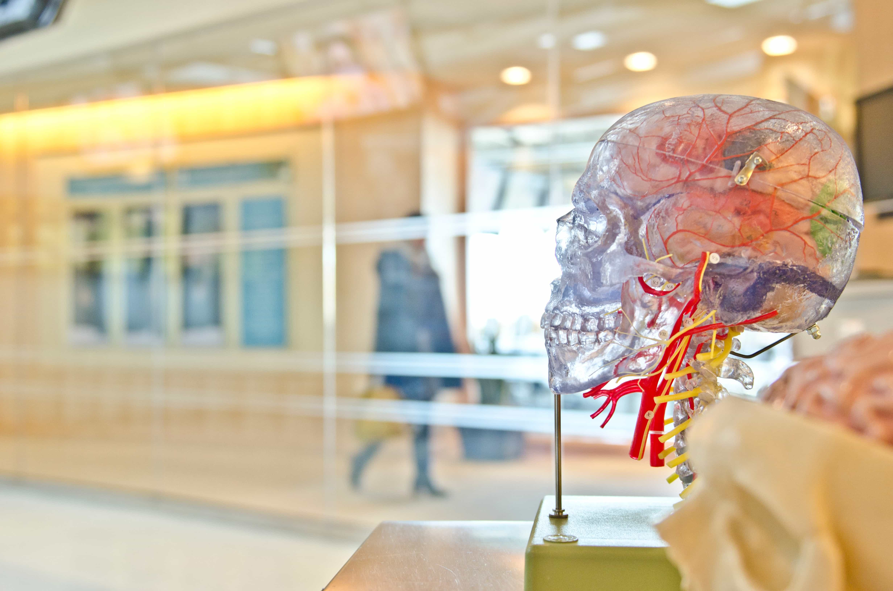

Researchers & Academics
Are you looking to get involved with our team of researchers and academics? Our museum offers various ways for you to use our resources and contribute towards them. We have online records, laboratory space, and a working relationship with a number of universities around the country.
The museum is located at Sars gate 102 0526 Oslo
OPENING HOURS
Monday: Closed
Tuesday: 10:00 – 16:00
Wednesday: 10:00 – 16:00
Thursday: 10:00 – 16:00
Friday: 10:00 – 19:00
Saturday: 9:00 – 16:00
Sunday: 9:00 – 13:00
